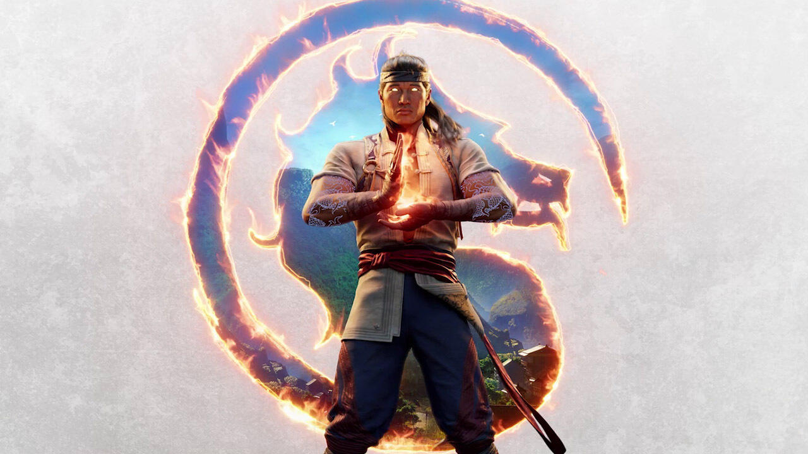

Mortal Kombat 1
Description
Mortal Kombat 1 is a fighting video game which features a story mode, an online multiplayer
Developer and Publishing Information:
Developer: NetherRealm Studios
Publisher: Warnner Bro. Games
Game Information:
Genre: Fighting
Players: 1-2
Online Multiplayer: Yes
Release Date: September 19, 2023
An Older Title with Series Redefining Features
"The new Kameo system offers an unparalleled level of player expression
Source for the Quote: Mortal Kombat Review by IGN Wikipedia Page for Mortal Kombat 1